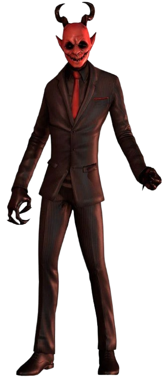

Malak

Informação Geral
Nome: Malak
Gênero: Masculino
Idade: Desconhecido
Papel exercido: Antagonista, perseguidor
Poder: Clonagem, invocação e etc
Fase: Todas salvo a primeira
Gênero: Masculino
Idade: Desconhecido
Papel exercido: Antagonista, perseguidor
Poder: Clonagem, invocação e etc
Fase: Todas salvo a primeira